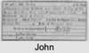

| [Index] |
| Sarah CURLING (1775 - 1857) |
|  |
| b. 05 Feb 1775 at St Laurence |
| m. 20 Aug 1793 John CURLING (1770 - 1841) at St Laurence |
| d. 1857 at St Laurence aged 82 |
| Parents: |
| Daniel CURLING (1730 - 1818) |
| Thomasine HOLMAN (1743 - 1778) |
| Events in Sarah CURLING (1775 - 1857)'s life | |||||
| Date | Age | Event | Place | Notes | Src |
| 05 Feb 1775 | Sarah CURLING was born | St Laurence | Note 1 | ||
| 01 Mar 1778 | 3 | Death of mother Thomasine HOLMAN (aged 35) | St Laurence | Note 2 | |
| 20 Aug 1793 | 18 | Married John CURLING (aged 23) | St Laurence | Note 3 | |
| 01 Aug 1818 | 43 | Death of father Daniel CURLING (aged 88) | St Laurence | Note 4 | |
| bef 1841 | 66 | Death of husband John CURLING (aged 71) | |||
| 1857 | 82 | Sarah CURLING died | St Laurence | Note 5 | |
| Personal Notes: |
|
According to Cotton she married her cousin so the son of one of her uncles: John, Alexander or William Curling. This fits with: Mr. John Curling, of Gatewick, Surrey, to Miss Sarah Curling, youngest daughter of Mr. Daniel Curling, of Chilton, Isle of Thanet ex The County Chronicle and Weekly Advertiser, for Essex, Herts, Kent, Surrey, Middlesex &c Sep 1793 (see http://www.lastchancetoread.com/docs/1793-09-03-the-county-chronicle.aspx)
1851 census living at Chilton Cottage were Sarah Curling widow 76, b St Lawrence and her sister Ann sinlge 84 b St Lawrence. Nest door at Chilton Farm were Thomas Hooper 56 b Southwark and his wife and children with fahter in law Daniel Curling 85 widower b St Lawrence. 1841 living at Chilton with her sister Ann and their father Daniel implying she was then a widow. WIll ex the Genealogist PROB 11/2254 made 23 Ap 1847 and proved 24 Jul 1857 - She was of Chilton, St Laurence - To her nephew Thomas Hooper the younger of Chilton her gold watch, chain and seals - Furniture, plate linen and china to her sister Ann Curling - Alexander Hart of Dorking, solicitor her books - Niece Ann Curling other household goods including wine and liquors and £250 (to find) - Eleanor Edwards wife of Francis Edwards of 17 Hart Street Bloomsbury £100 - Daniel Curling the elder of Chilton £25 - To his son Daniel the younger £250 - Rebecca Hart of Dorking widow £25 - To Rebecca Hart’s daughter Marianna Hart of Dorking spinster £25 - John Hart solicitor of Dorking £10 - Nephew Thomas Hooper the younger £100 [son of her sister Susanna who married Thomas Hooper ] - To his father Thomas Hooper and to Alexander Hart her executors £100 each - To the children of the late Thomas Bedford of Ramsgate £100 to be shared equally [husband of her sister Thomasine]. - To the daughters of her executor Thomas Hooper £250 to be shared equally - Her property at 14 Effingham Place to Alexander Hart (referred to in the will of her grandfather Daniel Curling). Executors Alexander Hart and Thomas Hooper Witnesses Mary Hunt and Martin L Daniel The will imples Sarah had no children The links between Sarah Hope Curling and others referred to in the will follow: Francis Edwards (1784–1857) of 17 Hart Street Bloomsbury was a celebrated architect https://en.wikipedia.org/wiki/Francis_Edwards_(architect). His will (ex Genealogist PROB 11/2257/178 refers to his wife and his son Francis and his daughter Eleanor. The daughter Eleanor Edwards married Thomas Parker Hart, farmer at St Pancras on 8 Dec 1857 linking the Hart and Edwards Families cited in the will. It is very likely that Francis Edward’s wife was Eleanor Hooper and they married at Southwark 8 (5) Jan 1824. Eleanor Hooper was the sister of Thomas Hooper who married Sarah Hope Curling’s sister Susanna. 1851 census: Rebecca Hart widow, 82, was living in Dorking with her sons and daughters Alexander, John, Charles Marianna and Elizabeth. 1861 census Alexander Hart solicitor, widower, 61, was living in Dorking with his unmarried brothers John 58, solicitor and Charles 56 solicitors managing clerk and his unmarried sisters Marianna 54 and Elizabeth 51, all born Dorking. |
| Created on a Mac™ using iFamily for Mac™ on 8 Oct 2023 |